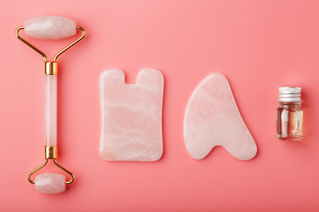
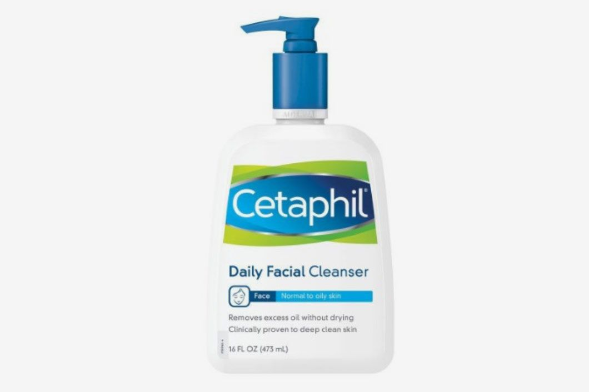
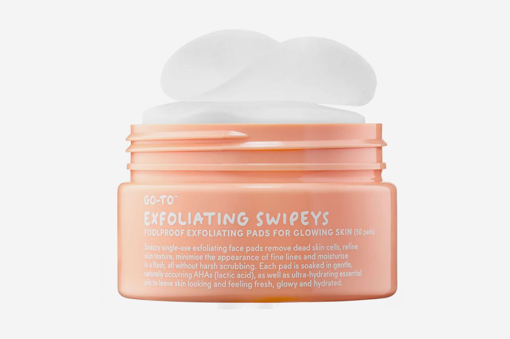
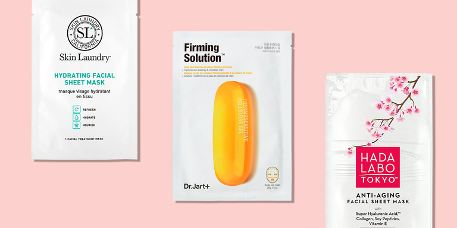

Introducing the basic tools, because it is impossible to own everything.

Over the last few years, face and body devices have become more accessible—and even more effective than your in-office treatment. From laser to microcurrent technology and contouring gadgets, devices are changing the way we treat our skin and body.
Click on the images to learn more about each tool!
Facial Steamer
Facial steamers are used at the start of the treatment to enlarge pores for easy extraction.
Perhaps the most important tool, the pimple/blackhead extractor comes in various shapes and sizes.
Facial Products
Having a stellar regime doesn’t necessarily always mean a 10 complicated step routine (although if you do that, bravo) it’s mainly about getting the basics sorted like your cleanser, moisturiser and SPF, then adding in your serums for your specific skin concerns and extras like masks and treatments for regular skin upkeep.
Cleanser
Cleansing is the first step of any solid skin-care routine, so it’s important to find a cleanser that knows what it’s doing, especially if you want to set the rest of your products up for success.

Exfoliator
There are two kinds of exfoliators. Physical ones slough off dead skin cells using teeny-tiny grains or granules of some type, while chemical ones do it using face acids. Both will give you softer skin, lighten acne scars, and improve skin texture without making you red or creating wrinkles in the process.

Sheet Mask
Face masks are the ultimate treat for your skin, and sheet masks are having a moment right now, too. “Sheet masks are essentially thin sheets made of paper, cloth, or gel saturated in serum, which usually contains moisturizers and extracts, explains Birnur Aral, Ph.D., Director of the Beauty Lab at the Good Housekeeping Institute. They’re an easy way to get a quick hydration boost in a short amount of time.

Toner
Skin-care products from Korea have helped completely changed the toner game. "Hydration is the foundation of a great K-beauty routine, and astringent toners that clarify the skin aren't as popular in Korea," Sarah Lee, the co-founder of Glow Recipe tells Allure. "The idea is to thoroughly cleanse and clarify via your double cleanse, then use a toner as the first leave-on step that hydrates and treats."
Moisturizers
Applying a face moisturizer daily is one of the number one keys to healthy, glowing skin no matter what the season, your age, or skin type. Moisturizers are emulsions of oil and water (plus other ingredients for nourishing, treatment, and preserving) that help replenish hydration, keeping moisture in skin and dryness out.